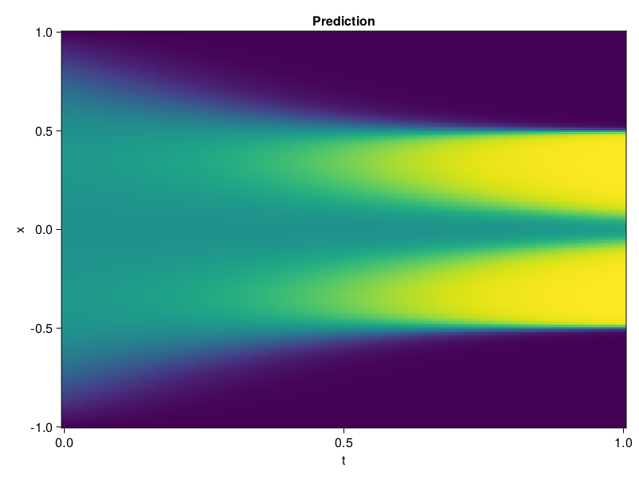

Allen-Cahn Equation with Sequential Training
In this tutorial we are going to solve the Allen-Cahn equation with periodic boundary condition from $t=0$ to $t=1$. The traning process is split into four stages, namely $t\in [0,0.25]$, $t\in [0.0,0.5]$, $t\in [0.0,0.75]$ and $t\in [0.0, 1.0]$.
using ModelingToolkit, IntervalSets
using Sophon
using Optimization, OptimizationOptimJL
@parameters t, x
@variables u(..)
Dₓ = Differential(x)
Dₓ² = Differential(x)^2
Dₜ = Differential(t)
eq = Dₜ(u(x, t)) - 0.0001 * Dₓ²(u(x, t)) + 5 * u(x,t) * (abs2(u(x,t)) - 1.0) ~ 0.0
domain = [x ∈ -1.0..1.0, t ∈ 0.0..0.25]
bcs = [u(x,0) ~ x^2 * cospi(x),
u(-1,t) ~ u(1,t)]
@named allen = PDESystem(eq, bcs, domain, [x, t], [u(x, t)])\[ \begin{align} - 0.0001 \frac{\mathrm{d}^{2}}{\mathrm{d}x^{2}} u\left( x, t \right) + 5 \left( -1.0 + \left|u\left( x, t \right)\right|^{2} \right) u\left( x, t \right) + \frac{\mathrm{d}}{\mathrm{d}t} u\left( x, t \right) =& 0.0 \end{align} \]
Then we define the neural net, the sampler, and the training strategy.
chain = FullyConnected(2, 1, tanh; hidden_dims=16, num_layers=4)
pinn = PINN(chain)
sampler = QuasiRandomSampler(500, (300, 100))
strategy = NonAdaptiveTraining(1, (50, 1))
prob = Sophon.discretize(allen, pinn, sampler, strategy)OptimizationProblem. In-place: true
u0: ComponentVector{Float64}(layer_1 = (weight = [-0.6671205163002014 1.5760236978530884; 0.6211656928062439 1.2917026281356812; … ; 2.002720832824707 1.5039221048355103; -0.43156692385673523 1.3575114011764526], bias = [0.0; 0.0; … ; 0.0; 0.0;;]), layer_2 = (weight = [-0.6546043157577515 0.7183066606521606 … 0.5941325426101685 -0.591715395450592; 0.11728348582983017 0.49513140320777893 … -0.6055535078048706 0.16933037340641022; … ; 0.37578514218330383 -0.128615602850914 … -0.04735943675041199 0.040635183453559875; 0.6857361197471619 -0.3830602467060089 … 0.10055630654096603 -0.31730780005455017], bias = [0.0; 0.0; … ; 0.0; 0.0;;]), layer_3 = (weight = [-0.11571986228227615 -0.17170657217502594 … 0.07802464067935944 -0.3801666498184204; 0.37718409299850464 0.1323772668838501 … -0.0036900797858834267 0.13629765808582306; … ; 0.45536619424819946 -0.02237190492451191 … -0.49753522872924805 0.21412691473960876; 0.5639455914497375 -0.3397844135761261 … 0.291085809469223 -0.5222771167755127], bias = [0.0; 0.0; … ; 0.0; 0.0;;]), layer_4 = (weight = [0.3425476551055908 0.40123310685157776 … -0.6035585999488831 -0.42412319779396057; 0.3577437400817871 0.2766825258731842 … -0.18274618685245514 -0.16052302718162537; … ; -0.34212198853492737 0.37400996685028076 … 0.31619635224342346 -0.035715796053409576; -0.054828811436891556 0.2988584339618683 … -0.20640960335731506 -0.24379251897335052], bias = [0.0; 0.0; … ; 0.0; 0.0;;]), layer_5 = (weight = [0.7084451913833618 -0.5354771018028259 … 0.5694330930709839 -0.20362363755702972], bias = [0.0;;]))We solve the equation sequentially in time.
function train(allen, prob, sampler, strategy)
bfgs = BFGS()
res = Optimization.solve(prob, bfgs; maxiters=2000)
for tmax in [0.5, 0.75, 1.0]
allen.domain[2] = t ∈ 0.0..tmax
data = Sophon.sample(allen, sampler)
prob = remake(prob; u0=res.u, p=data)
res = Optimization.solve(prob, bfgs; maxiters=2000)
end
return res
end
res = train(allen, prob, sampler, strategy)u: ComponentVector{Float64}(layer_1 = (weight = [-1.5254157256055223 0.41921288110000415; 1.3359484305595535 1.0672654707702205; … ; 1.9845543030431818 0.587560887033615; -0.7059044440515915 1.8791653022744266], bias = [-0.6257368658012952; -0.7400907616861264; … ; 0.7606204543179172; 0.9435156126406973;;]), layer_2 = (weight = [-0.711607604551181 0.8522278055368733 … 0.2015834317411209 -0.7011680286928313; 0.018836338308839965 0.2948261955151637 … -0.365551431130014 0.6732270436921101; … ; 0.39253363981889733 -0.2057423029158122 … 0.3007440926348472 -0.3282444743234478; 0.550993415444525 0.09084589583489473 … 0.3097584616200755 -0.561306395222484], bias = [0.05394698989810169; 0.44641602884889414; … ; 0.5551812230176634; -0.07902220260199447;;]), layer_3 = (weight = [-0.4372024248316107 -0.2346841527210184 … -0.0383096400726528 0.15584571483244167; 0.3336010491953033 0.282628248395848 … 0.8332167261759779 0.1996561019405429; … ; 0.40467142047253646 0.1203955703155487 … -0.9682951731731576 0.10954851389249393; 0.48414828601334275 -0.6444751751462868 … 0.6085408730234874 -0.4049150387895044], bias = [-1.1786441688513012; -0.17173948968620079; … ; -0.3158134683401668; 0.014770211064397193;;]), layer_4 = (weight = [1.3660626198951227 0.054736742487509836 … -0.5620725616605615 -0.44112070870913017; 0.9950357445104848 -0.013404884630531149 … -0.24781482664577695 -0.33264300212481834; … ; -0.41931848800791116 0.361418141751937 … 0.5154589516697463 0.06255801389560375; 0.021876832935066245 -0.04909590015626874 … -0.15022762924956237 -0.35929062215255925], bias = [-0.7919812274390744; 0.3041853204855628; … ; -0.3287869605565677; 0.03325851284407542;;]), layer_5 = (weight = [1.2601993943567444 -0.4911518980758083 … 0.37520990048635366 -0.14486355764542724], bias = [-0.3742617028085797;;]))Let's plot the result.
using CairoMakie
phi = pinn.phi
xs, ts = [infimum(d.domain):0.01:supremum(d.domain) for d in allen.domain]
axis = (xlabel="t", ylabel="x", title="Prediction")
u_pred = [sum(pinn.phi([x, t], res.u)) for x in xs, t in ts]
fig, ax, hm = heatmap(ts, xs, u_pred', axis=axis)